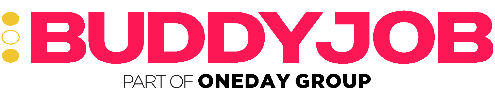

SOCIAL MEDIA · CONTENT STRATEGY
BuddyJob
Leggere il lavoro. Poi raccontarlo.
Per BuddyJob trasformo conversazioni, trend e situazioni quotidiane in contenuti capaci di informare, creare riconoscimento e far partecipare la community.
Dentro il progetto